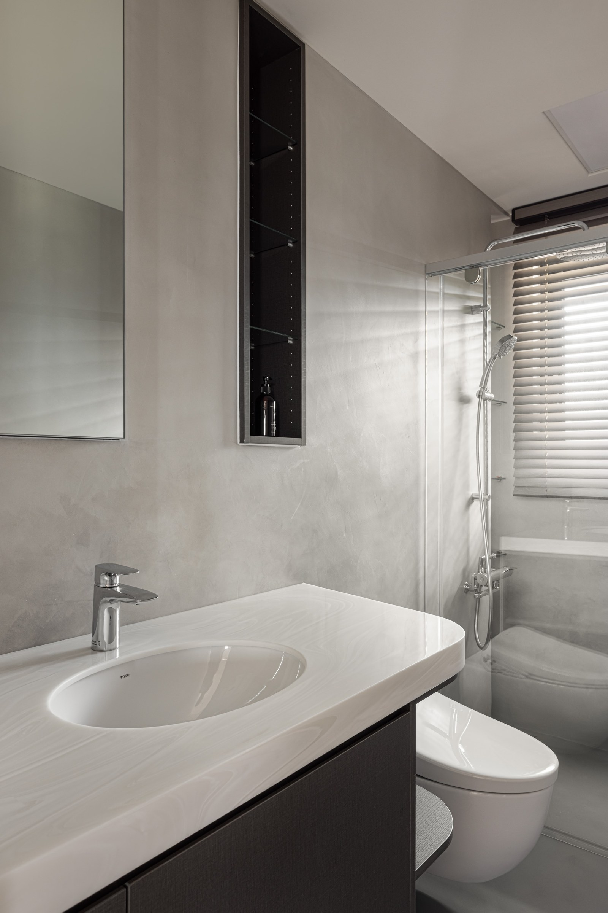

這個家把重量集中在一面牆上，其他地方才空得起來。
This home gathers its weight into a single wall, so everything else can afford to be empty.

01
進門第一眼是兩件事並排：一面厚的，一面透的。厚的那面，重點不在弧線，在厚度怎麼被做出來——轉角全部收成圓的。石材收直角，眼睛會讀成兩片拼在一起；收圓角才是一整片，紋路繞著圓弧是連的。
The first thing you meet at the door is two things side by side: one thick, one transparent. On the thick one, the point is not the curve but how the thickness was made — every corner is turned round. A square edge in stone reads as two slabs butted together; a rounded one reads as a single piece, the veining running unbroken around the curve.


02
好看的也不是紋，是石頭裡一團一團的石英結晶。沒點燈時是灰褐色的斑；燈一亮，光只從石英透出來，變成蜜色，底幾乎不透。它不是一面發光的牆，是一塊只在特定位置亮起來的石頭。所以要控的從來不是石頭，是燈——燈的分布要均勻到不去干擾石頭本來的分佈。
Nor is the veining what carries it: it is the quartz, gathered in clusters through the stone. Unlit, those clusters are grey-brown blotches; lit, the light comes through the quartz alone and turns honey-colored, while the body of the stone stays close to opaque. This is not a glowing wall. It is a stone that lights up only where it can — so what has to be controlled is never the stone but the lamps, their distribution even enough that it does not disturb the distribution already in the stone.

03
牆上橫著的那道黑色鋼板不是裝飾，是支撐。這面牆沒有掛電視，改用雷射電視，鋼板是主機的檯面，也是上半部整片石材的底。下層石材先固定，再加上鋼板，最後把上半部整片鋪上去。一片做兩件事，牆面上就少一樣東西，上半部也少一道分割線。
The black steel plate running across the wall is not decoration; it is support. No television is mounted here — a laser TV takes its place, and the plate is both the ledge its unit sits on and the bed for the single sheet of stone above. The lower stone was fixed first, then the plate added, then the upper sheet laid across in one piece. One plate doing two jobs means one less object on the wall, and one less joint across the stone.


04
公共空間沒有餐桌，換成一座吧檯。它不是一條直線，兩側各收一道斜邊，中間帶一段圓弧。
The common area has no dining table; a bar stands in its place. It is not a straight line: both ends are cut back on a diagonal, and the middle carries a curve.

05
直的吧檯會讓四個人並排坐成一列，各看各的。斜邊把面向轉進來，圓弧在中間接住，四個人就圍成一桌，不是四個座位。檯面沒有變大，中間反而讓出了空間。旁邊是三面可視的魚缸，配管藏進櫃體，加熱爐具收在吧檯裡——進門那一眼的厚與透，就是這面牆與這座缸並排出來的。
A straight bar seats four people in a row, each looking their own way. The diagonals turn them inward and the curve catches them at the center, so four people gather around one table instead of occupying four seats. The counter is no larger — it is the middle that opens up. Beside it sits the aquarium, visible from three sides, its plumbing buried in the cabinetry and the cooktop tucked inside the bar; the thick and the transparent you meet at the door are this wall and this tank, standing side by side.


06
餐桌讓出來的位置，換成一組鐵件層架與一張單椅。被功能佔住的地方一旦鬆開，行走更鬆，停留的時間也跟著變長。
Where the dining table had been, a steel shelving unit and a single chair took over. Once ground is given back by function, movement loosens and people stay on it longer.

07
公共空間能這樣放開，是從衛浴讓出來的。難處不在牆，在管：糞管的位置是固定的，動不了；馬桶一換位置，橫管就得找地方走。走地板最省事，代價是把地墊起來，換來一道要跨一輩子的高低差，而業主要的正是不要那道高低差。所以改用壁掛馬桶，橫管收進牆裡，在牆內接回原本的糞管，地坪從頭到尾是平的。
That the common area could open up at all was won in the bathroom. The difficulty was never the walls; it was the pipe. The soil stack is fixed and cannot be moved, so once the toilet shifted, the horizontal run had to find somewhere to go. Along the floor would have been simplest, at the cost of raising the level — a threshold to step over for the rest of your life, and that step was exactly what the owners did not want. So the toilet was hung on the wall, the run buried inside the wall and returned to the original stack within it, leaving the floor flat from end to end.


08
壁掛把牆做厚，是這個解法必須付的。但管線走完之後，牆裡還剩下一段深度，壁龕與鏡櫃就嵌進那裡——櫃子不再站在地上，它的寬度被收進牆裡。東西收得更多，空間反而看起來更大。
Hanging the toilet means thickening the wall; that is what this solution costs. But once the pipework was in, depth still remained inside that wall, and the niche and mirror cabinet were set into it — the cabinet no longer stands on the floor; its width is absorbed by the wall. More is put away, and the room looks larger for it.


All Photos